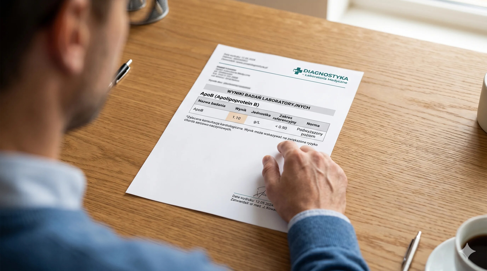

Szybka odpowiedź
Przy wyniku ApoB/ApoA1 trzeba pamiętać, że ApoB przybliża liczbę aterogennych cząstek, a ApoA1 jest głównym białkiem HDL. Ich iloraz był związany z ryzykiem w badaniach populacyjnych, ale współczesne wytyczne opierają cele przede wszystkim na LDL-C, nie-HDL-C, ApoB i całkowitym ryzyku, a nie na jednym uniwersalnym progu. Wynik czyta się razem z jednostkami i chorobami.
Kluczowe wnioski
- ApoB i ApoA1 to dwa osobne stężenia; wskaźnik jest ich ilorazem tylko przy zgodnych jednostkach.
- Niższy iloraz nie daje gwarancji ochrony, a wyższy nie rozpoznaje samodzielnie miażdżycy.
- ApoB ma silniejsze miejsce w aktualnych zaleceniach niż sam wskaźnik ApoB/ApoA1.
- Wynik zmienia postępowanie dopiero wtedy, gdy jest połączony z całkowitym ryzykiem i celem leczenia.
Co mierzą ApoB i ApoA1?
Każda aterogenna cząstka LDL, IDL, VLDL i lipoproteiny(a) zawiera jedną ApoB100, dlatego ApoB przybliża ich liczbę. ApoA1 jest głównym białkiem cząstek HDL, ale jego stężenie nie mierzy bezpośrednio całej funkcji HDL. Parametry opisują inne elementy transportu lipidów i nie są prostymi zamiennikami LDL oraz HDL.
Jednostki i cele ApoB wyjaśnia osobny przewodnik po ApoB.

Jak oblicza się wskaźnik ApoB/ApoA1?
Dzieli się stężenie ApoB przez stężenie ApoA1, pod warunkiem że oba zapisano w tych samych jednostkach. Przykład: 0,90 g/l ApoB i 1,50 g/l ApoA1 daje iloraz 0,60. Nie porównuj wyniku z tabelą bez sprawdzenia populacji, płci, metody i celu badania, bo nie ma jednego progu terapeutycznego dla wszystkich.
Nie przeliczaj tylko jednej wartości. Relację z lipidogramem pokazuje Centrum Cholesterolu i Badań.
Czy wskaźnik przewiduje zawał lepiej niż lipidogram?
Badanie INTERHEART wykazało silny związek ilorazu ApoB/ApoA1 z ryzykiem zawału w wielu regionach świata. Było to jednak badanie obserwacyjne typu case-control, a nie dowód, że leczenie do konkretnego ilorazu poprawia wynik. Aktualizacja ESC z 2025 roku nie ustanawia wskaźnika jako głównego celu leczenia.
W praktyce decyzję opiera się na całym ryzyku, LDL-C, nie-HDL-C, ApoB, Lp(a), chorobach i leczeniu. Lp(a) opisuje osobny artykuł.
Kiedy warto oznaczyć ApoB i ApoA1?
ApoB jest szczególnie użyteczne przy rozbieżności z LDL-C, wysokich trójglicerydach, cukrzycy, otyłości lub bardzo niskim LDL-C. ApoA1 i iloraz mogą uzupełniać ocenę, ale rzadko są jedyną podstawą decyzji. Wynik warto omówić, jeśli masz chorobę sercowo-naczyniową, cukrzycę, chorobę nerek lub leczenie lipidowe.
Częstotliwość badań dostosuj do decyzji klinicznej według kalendarza kontroli.
| Parametr | Co opisuje? | Czego nie rozstrzyga? |
|---|---|---|
| ApoB | Liczbę cząstek aterogennych | Samodzielnie całego ryzyka |
| ApoA1 | Główne białko HDL | Całej funkcji HDL |
| ApoB/ApoA1 | Relację stężeń | Jednego celu dla wszystkich |
| LDL-C | Cholesterol w LDL | Liczby cząstek przy rozbieżności |
Wskaźnik ApoB/ApoA1 porządkuje relację dwóch białek, ale leczenie nadal dotyczy człowieka i jego całkowitego ryzyka.
Najczęściej zadawane pytania
Jaki powinien być wskaźnik ApoB/ApoA1?
Nie ma jednego celu terapeutycznego dla wszystkich. Interpretacja zależy od metody, populacji i całkowitego ryzyka.
Jak obliczyć ApoB/ApoA1?
Podziel ApoB przez ApoA1 po upewnieniu się, że oba wyniki są w tych samych jednostkach.
Czy ApoA1 to dobry cholesterol?
ApoA1 jest głównym białkiem HDL, ale pojedyncze stężenie nie opisuje wszystkich funkcji cząstek HDL.
Czy ApoB/ApoA1 zastępuje LDL?
Nie. Jest uzupełnieniem, a aktualne cele leczenia opierają się głównie na LDL-C, nie-HDL-C, ApoB i ryzyku.
Źródła
- 2025 ESC/EAS dyslipidaemia update
- NLA expert consensus on ApoB
- INTERHEART apolipoprotein analysis
- EAS/EFLM consensus on atherogenic lipoproteins
Uwaga: Artykuł ma charakter informacyjny i edukacyjny. Nie zastępuje konsultacji, diagnozy ani indywidualnego leczenia.